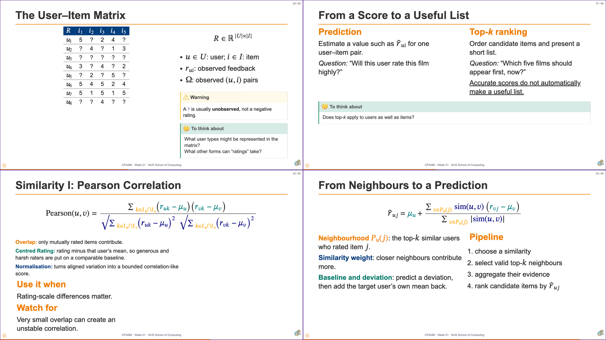
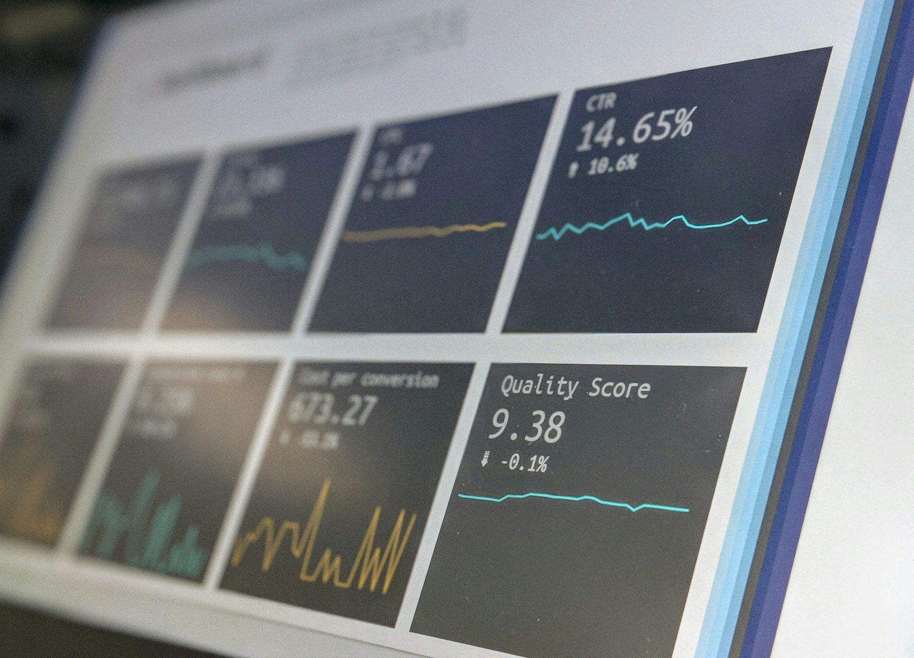

“Quality: Unlike a metadata like price or like count, you can't really quantify quality from the item itself.”
Reply“Quality is also subjective and can potentially be influenced by trendiness.”
QualityCP4285 Modern Recommendation Systems — Week 02
soc-n.us/cp4285-t2610-w02
18 Aug 2026

Pre-flight survey · 26 submissions — cohort signals
Source: Canvas pre-flight survey. Programme selections were multi-select; learning-expectation themes were coded from 24 substantive answers.
Open responses · representative anonymous phrases — larger phrases indicate central themes, not frequency
Source: Canvas pre-flight survey, anonymous open responses. Phrases are abbreviated from representative excerpts for slide readability.
Canvas discussion board · post before Mon, 24 Aug 2026 · 23:59 SGT
Post a short, concrete response to this question; then reply constructively to one classmate.
Next week: turn this intuition into latent-factor representations of the user–item matrix.
“Quality: Unlike a metadata like price or like count, you can't really quantify quality from the item itself.”
Reply“Quality is also subjective and can potentially be influenced by trendiness.”
Quality“Nostalgia. It's a property of the relationship between a user and an item which is driven by the user's personal history …”
Reply“Could it be modelled by grouping users into distinct age groups?”
Nostalgia“Trust: It is not an item metadata label because it is an underlying, subjective perception that is not directly observable.”
Reply“The degree of trust cannot be readily quantified and it may vary widely …”
Trust“One latent dimension is how emotionally provocative an item is? Some items naturally stimulate our excitement, motivation or pleasure …”
Reply“Psychological emotions are subjective … and it is tough to quantify.”
EmotionCollaborative filtering
(CF; last week)
Evidence
User–item interactions
Mechanism
Borrow from similar users or items
Watch
Thin local overlap can leave a neighbourhood silent.
Content-based filtering
(CBF)
Evidence
Explicit item, user, or context features
IR mechanism
Encode and match genres, tags, and text
Watch
Feature coverage and encoding quality set the limit.
Latent-factor model
(LFM)
Evidence
User–item interactions
Mechanism
Learn shared hidden coordinates from many interactions
Watch
A factor is a learned pattern, not a personal fact.
Observed or stated fields can enter a recommender score before any latent factors are learned.
student · Singapore · vegetarian
weekday evening · budget: low
Supplied, measured, or declared—not inferred from interaction patterns.
cuisine: Thai · price: $$
genre: comedy · duration: 90 min
Observed descriptions of a candidate item.
\[ \color{navy}{\operatorname{score}(u,i,c)}=\color{teal}{\mathbf{w}^{\top}}\color{orange}{\mathbf{x}(u,i,c)} \]
Vector x represents an item or a user. Use a similarity metric (Week 01) to define similarities.
Features as explicit and implict
An explicit field is an input we choose to represent. They can be fed as features to create latent factors later.
Text can be an item field, user field, or contextual need.
“animated family film”
“a light comedy tonight”
Profiles, reviews, queries, and session descriptions can express a need.
Toy Story (1995)
Animation · Children’s · Comedy
Titles, genres, tags, synopses, and reviews can describe a candidate.
\[ \color{teal}{\mathbf{x}_{\text{text}}}=\operatorname{encode}(\color{orange}{\text{text}}) \]
Encoding maps words to coordinates for comparison or combination.
IR matches text representations; the same encoding can furnish recommender features.
comedy; the first shares no exact coordinate with the listed movie genres.animated and animation, and family and children, remain separate until another mechanism relates them.\[ \color{orange}{\operatorname{tf}(t,d)}=\text{count of term }t\text{ in document }d \]
Repeated occurrence can strengthen a term’s contribution within one document.
\[ \color{navy}{\operatorname{idf}(t)}=\log\frac{N}{df_t} \]
A term found in almost every document contributes less to distinguishing documents.
\(\operatorname{tf}\)\(\!\mbox{ - }\!\)\(\operatorname{idf}(t,d)\) \(=\) \(\operatorname{tf}(t,d)\) \(\times\) \(\operatorname{idf}(t)\)
User interest: animated family comedy
A: Toy Story · Animation · Children’s · Comedy B: The Lego Movie · Animation · Family · Comedy
| term | IDF | U | A | B |
|---|---|---|---|---|
animated |
1.8 | 1 | 0 | 0 |
animation |
1.8 | 0 | 1 | 1 |
family |
1.4 | 1 | 0 | 1 |
children |
1.4 | 0 | 1 | 0 |
comedy |
1.2 | 1 | 1 | 1 |
animated ≠ animation; family ≠ children.
\(\cos(\mathbf{u},\mathbf{t})=\dfrac{\mathbf{u}\cdot\mathbf{t}}{\lVert\mathbf{u}\rVert\,\lVert\mathbf{t}\rVert}\)
| Question | TF–IDF | Dense word embedding |
|---|---|---|
| What is represented? | Exact vocabulary-term evidence | Learned continuous coordinates |
| Main strength | Transparent lexical matching | Can generalise across related usage |
| Main limitation | Synonyms remain separate terms | Learned proximity can be opaque or misleading |
| Typical score | Cosine similarity over sparse vectors | Cosine/dot-product similarity over dense vectors |
Bridge: IR turns text into comparable vectors. LFM will turn interaction history into comparable user and item vectors.
At IBM, Hans Peter Luhn demonstrated Key Word in Context (KWIC): an automatic index that rearranged keywords while preserving their textual context.
By the early 1960s, KWIC had become central to hundreds of computerised indexing systems—a useful reminder that retrieval began with finding useful words, not with the Web.
| Retrieval | Latent-factor recommendation |
|---|---|
| Query and document vectors | User and item vectors |
| Evidence: words in text | Evidence: observed interactions |
| Score: lexical/semantic match | Score: predicted affinity |
| Goal: rank relevant documents | Goal: rank plausible items |
Analogy, not equivalence: a latent factor is not a word, a recorded metadata field, or a fact about a person.

Both methods approximate a matrix with fewer factors, but their constraints change the meaning of those factors.
\[ R \approx \color{teal}{U_k}\color{navy}{\Sigma_k}\color{orange}{V_k^{\top}} \]
\[ X \approx \color{teal}{W}\color{orange}{H}, \qquad \color{teal}{W},\color{orange}{H}\geq0 \]
Shared goal: compress matrix structure. Different question: may a factor subtract, or must it add?
Centred diner–restaurant residuals — \(+\) means above a diner’s baseline; \(-\) means below it.
\[ R= \begin{bmatrix} 1&1&-2\\ 1&1&-2\\ -2&-2&4 \end{bmatrix} = \underbrace{\frac{1}{\sqrt6}\begin{bmatrix}1\\1\\-2\end{bmatrix}}_{\color{teal}{U_1}} \underbrace{[6]}_{\color{navy}{\Sigma_1}} \underbrace{\frac{1}{\sqrt6}\begin{bmatrix}1&1&-2\end{bmatrix}}_{\color{orange}{V_1^\top}} \]
\[ \text{Exact rank 1:}\quad \color{teal}{U_1}\in\mathbb{R}^{3\times1},\quad \color{navy}{\Sigma_1}\in\mathbb{R}^{1\times1},\quad \color{orange}{V_1^\top}\in\mathbb{R}^{1\times3}. \]
Nonnegative diner–restaurant intensities — components add; they never cancel.
\[ X= \begin{bmatrix} 2&2&2\\ 2&3&4\\ 4&3&2 \end{bmatrix} = \underbrace{\begin{bmatrix} 1&1\\ 1&2\\ 2&1 \end{bmatrix}}_{\color{teal}{W}} \underbrace{\begin{bmatrix} 2&1&0\\ 0&1&2 \end{bmatrix}}_{\color{orange}{H}} \]
\[ \text{Exact rank 2:}\quad \color{teal}{W}\in\mathbb{R}_{\ge0}^{3\times2},\qquad \color{orange}{H}\in\mathbb{R}_{\ge0}^{2\times3}. \]
A restaurant app has a sparse matrix of diner ratings. Which description best matches latent-factor factorisation?
A · Recorded labels only
It sorts restaurants only by their recorded cuisine label.
B · Learned interaction vectors
It learns compact diner and restaurant vectors from observed interactions, then uses their alignment to estimate affinity.
C · Unvisited means one star
It treats every unvisited restaurant as a one-star rating.
D · Geographic copying
It copies the rating of the geographically nearest diner.
In groups of 3–4: choose one answer, then prepare a two-sentence explanation naming the evidence and learned representation it requires.
\[ \color{navy}{\hat r_{ui}}=\color{teal}{\mathbf{u}_u^\top}\color{orange}{\mathbf{v}_i} \]
\[ \color{teal}{\mathbf{u}_u}=[\color{teal}{u_{u1}},\color{teal}{u_{u2}},\ldots,\color{teal}{u_{uk}}] \] A learned location in the model’s preference space.
\[ \color{orange}{\mathbf{v}_i}=[\color{orange}{v_{i1}},\color{orange}{v_{i2}},\ldots,\color{orange}{v_{ik}}] \] How an item aligns with the learned interaction patterns.
The dot product produces a model score. A production recommender can still filter, diversify, or re-rank the resulting candidates.
\[ \color{teal}{\mathbf{u}_u}=[\color{teal}{0.8},\color{teal}{0.2}], \qquad \color{orange}{\mathbf{v}_A}=[\color{orange}{0.9},\color{orange}{0.1}], \qquad \color{orange}{\mathbf{v}_B}=[\color{orange}{0.4},\color{orange}{0.8}] \]
\[ \color{navy}{\hat r_{uA}}=\color{teal}{0.8}\color{orange}{(0.9)}+\color{teal}{0.2}\color{orange}{(0.1)}=\color{navy}{\mathbf{0.74}} \]
\[ \color{navy}{\hat r_{uB}}=\color{teal}{0.8}\color{orange}{(0.4)}+\color{teal}{0.2}\color{orange}{(0.8)}=\color{navy}{\mathbf{0.48}} \]
Current model verdict: Item A scores higher. Still unresolved: diversity, constraints, uncertainty, exposure, and the rest of the candidate list.
\[ \min_{\color{teal}{U},\color{orange}{V}}\; \sum_{\color{navy}{(u,i)\in\Omega}}\left(\color{navy}{r_{ui}}-\color{teal}{\mathbf{u}_u^\top}\color{orange}{\mathbf{v}_i}\right)^2 + \color{navy}{\lambda}\left(\lVert \color{teal}{U}\rVert_F^2+\lVert \color{orange}{V}\rVert_F^2\right) \]
A recommender's representation determines which evidence can be compared, inferred, and acted upon.
🔑 Three ideas to carry forward
PHOTO: ST FILE
Read: “S’pore studying restrictions on direct messaging, auto-play on social media to protect kids”
Canvas discussion board · post one individual comment before Mon, 23:59 SGT
In 120–160 words, choose and name one card-suit lens, cite one article detail, and propose one piece of evidence, safeguard, or user control the platform should examine.
No classmate reply this week. Next week: protocols, ranking metrics, and what a score leaves out.
An offline metric tells us how a list performed. Next, we ask whether the recommendation process performs well under a scenario.
In Week 03:


CP4285 · Week 02 · NUS School of Computing